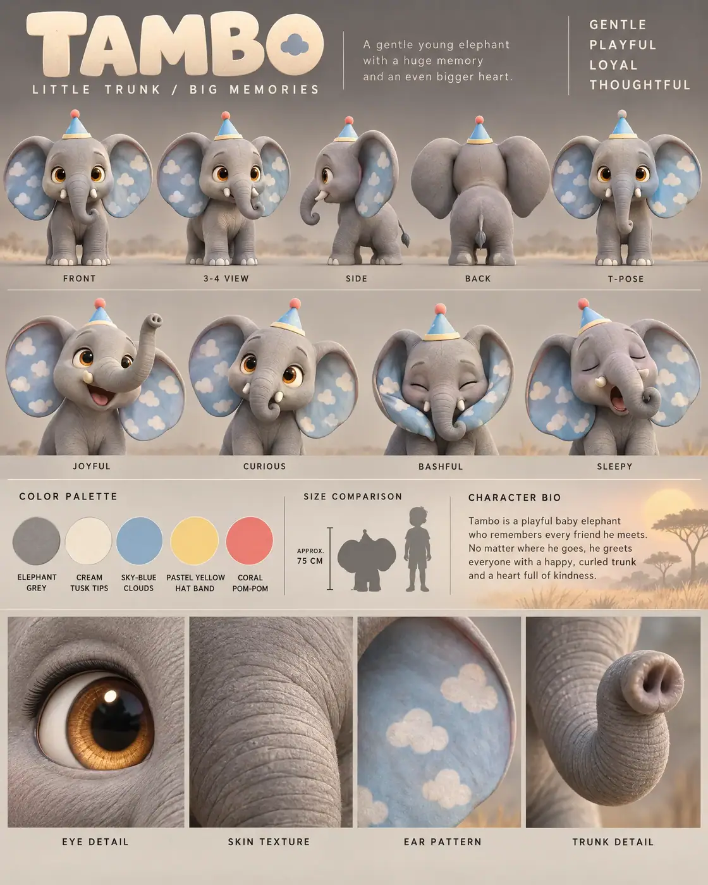

#100 of 100
Tambo
Baby elephant
Jungle & SavannaLITTLE TRUNKBIG MEMORIES
- Species
- Baby elephant
- Collection
- Jungle & Savanna
- Height
- 75 CM
- Personality
- GENTLEPLAYFULLOYALTHOUGHTFUL
- Colour palette
- ELEPHANT GREYCREAM TUSK TIPSSKY-BLUE CLOUDSPASTEL YELLOW HAT BANDCORAL POM-POM
- Expressions
- joyful trunk-raised grin
- curious wide-eyed look
- bashful ear-covering smile
- sleepy trunk-curling yawn
- Detail panels
- EYE DETAIL
- SKIN TEXTURE
- EAR PATTERN
- TRUNK DETAIL
- Character note
- Tambo — a playful baby elephant who remembers every friend and greets everyone with a happy curled trunk
Reference sheet prompt
Cute baby elephant named TAMBO, with oversized amber eyes, enormous floppy ears patterned with tiny soft clouds, a short curled trunk, tiny rounded tusks, smooth elephant-grey skin, sturdy short legs, and a small sky-blue party hat balanced between its ears. A gentle young elephant with a huge memory and an even bigger heart high-end 3D animated feature character reference sheet, original character design, polished cinematic family-animation aesthetic, portrait 4:5 presentation board, premium editorial character-design layout, top-left header reading “TAMBO” with the tagline “LITTLE TRUNK / BIG MEMORIES,” four personality traits in the top-right corner reading “GENTLE / PLAYFUL / LOYAL / THOUGHTFUL” full-body turnaround in the top section — exactly five evenly spaced views: front / 3-4 / side / back / T-pose, identical ear cloud patterns, trunk shape, tusks, and party hat in every view, consistent body proportions, clean labels beneath each pose row of 4 bust-length facial expressions: joyful trunk-raised grin, curious wide-eyed look, bashful ear-covering smile, sleepy trunk-curling yawn, expressive ear and trunk positions matching each emotion color palette swatches with clean uppercase labels: ELEPHANT GREY, CREAM TUSK TIPS, SKY-BLUE CLOUDS, PASTEL YELLOW HAT BAND, CORAL POM-POM neutral warm-grey studio background with subtle African savanna accents: faint golden grass shapes, distant acacia silhouettes, soft warm hills, and a restrained sunrise glow appearing only in the bio panel and detail strip, clean grey space around the character views, thin section dividers, warm cinematic 3-point lighting middle information band containing the color swatches, a small elephant silhouette beside a human height comparison, approximate height label “APPROX. 75 CM,” and a short readable character bio describing Tambo as a playful baby elephant who remembers every friend and greets everyone with a happy curled trunk bottom row of exactly 4 macro detail panels labeled EYE DETAIL, SKIN TEXTURE, EAR PATTERN, TRUNK DETAIL, showing the glossy amber eye, smooth subtly wrinkled skin, painted cloud markings inside the ear, and the expressive rounded trunk tip 8k render, consistent model-sheet proportions, large rounded head, oversized floppy ears, short sturdy legs, tiny rounded tusks, smooth gently wrinkled skin, clean legible typography, no extra characters, no duplicate trunks, no distorted ears, no busy savanna scene, no logos